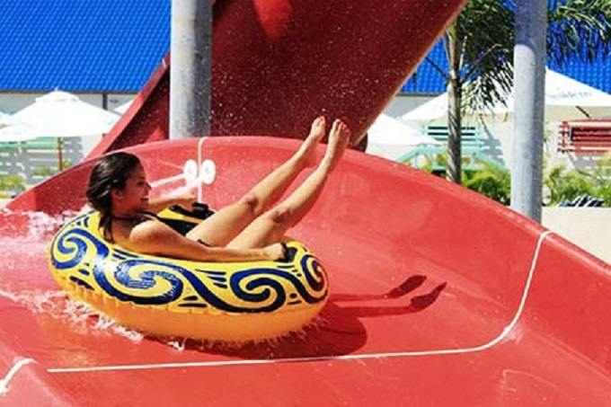
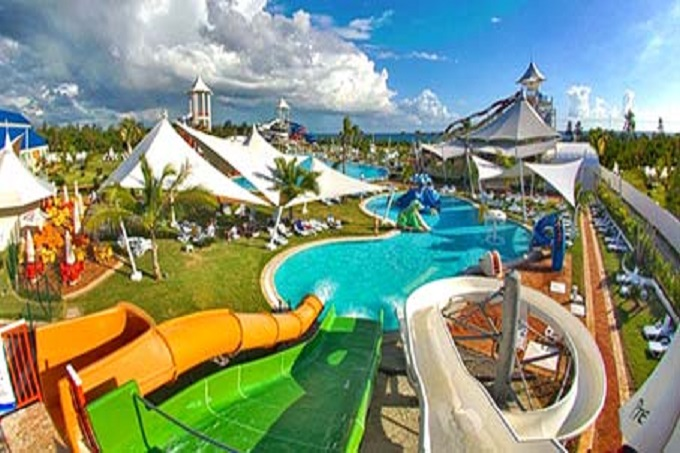
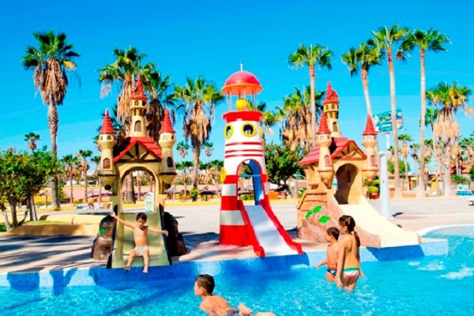
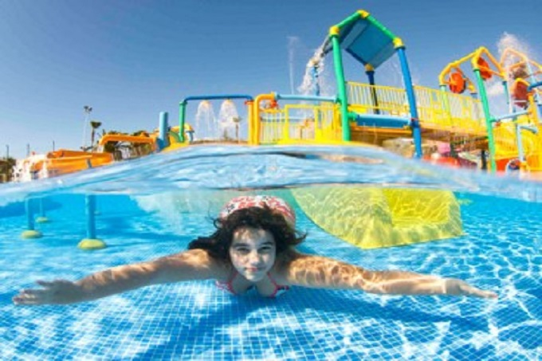

|  |
Visión Turismo te invita a disfrutar con toda la familia y grupos de amigos a un día espectacular y
refrescante en este nuevo parque de diversiones. Localizado en la hermosa costa de Juan Dolio al Este de Republica Dominicana,
las modernas instalaciones del Parque Acuático Los Delfines cuentan con 17 toboganes de última generación, de diferentes tipos y
longitudes, los cuales finalmente culminan en refrescantes piscinas; las divertidas torres Fast y Furious Tower, Crazy Tower y
Twister Tower, les harán experimentar toda la adrenalina y velocidad posible, llegando hasta una altura de 82 pies.
Después de todas las emociones te invitamos a relajarte y flotar en la piscina de olas.Para los más pequeños
el parque dispone de la Piscina Magic Octopus Kids Area, la cual tiene una variedad de 6 divertidos toboganes, en donde en sus
recorridos disfrutarán toda la acción y emoción hasta finalmente terminar deslizándose en la piscina de niños.
|
 |
|  |
Las aguas son purificadas mediante sistema de Osmosis inverso. Ven y disfruta del día más refrescante y excitante en
Los Delfines Park Lleno de aventura y diversión. Los Delfines Park está abierto de
Miércoles a Domingo, de 10:00a.m. a 6:00p.m.
Mientras te relajas y te diviertes, el grupo de animación estarán entreteniendo a tus niños, asegurándose que ellos tengan un momento
de diversión en el parque. Lo mas importante es la seguridad, esta es la razón por la cual tenemos salvavidas perfectamente entrenados y certificados.
En caso de emergencias contamos con el amigable y generoso doctor quien esta siempre disponible.
|
 |